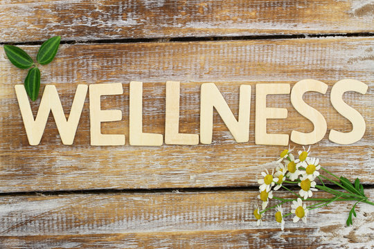

About the Project
Designing an Accessible Wellness Website
This project was created to show how a student-centered wellness website can be both visually clear and accessible for a wide range of users.

Project Purpose
The goal of this project is to help college students quickly access wellness-related information, including emotional support, academic resources, and self-care guidance.
Target Audience
The primary audience is college students who may need easy access to support while balancing school, stress, and daily life.
Accessibility Choices
This site uses semantic HTML, a skip link, visible focus states, keyboard-friendly navigation, accessible forms, and expandable content built with buttons and ARIA attributes.